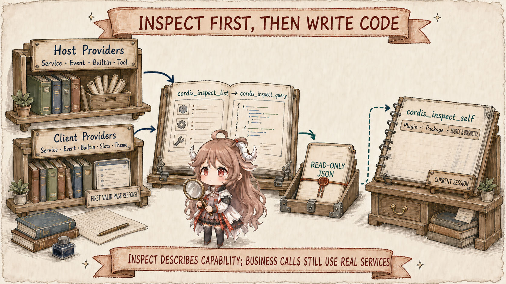
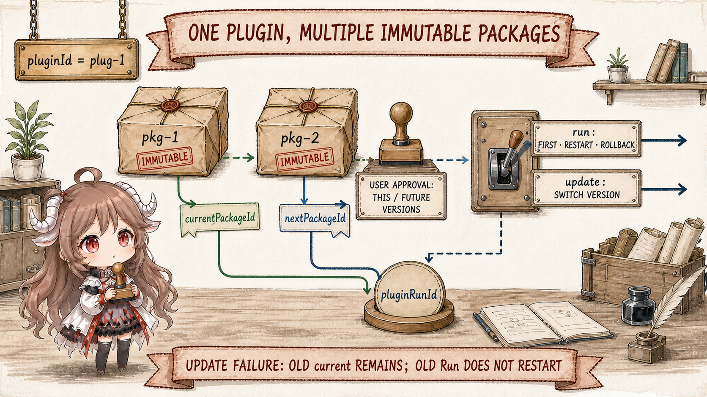
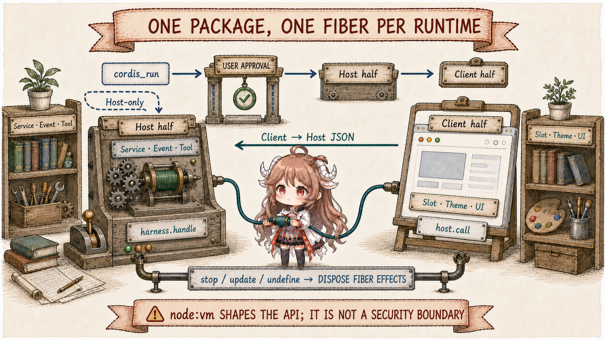
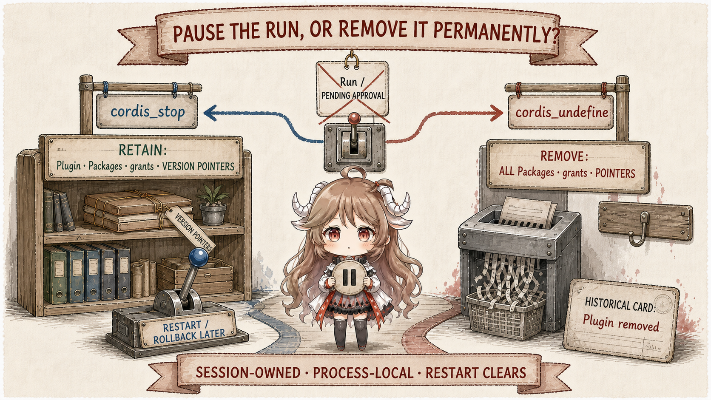

An ordinary tool sends a call to an implementation that already exists. A dynamic Cordis Plugin lets the model create the implementation itself. It can consume Services, listen to Events, register another model tool, or contribute browser UI to a Slot. The hard questions therefore shift from “can this code execute?” to “which contract guided the code, which version is being attempted, who approved the browser half, what survives a failed transition, and what remains after restart?”
Reading contract.By the end, you should be able to explain why the seven cordis_* tools split into three Inspect tools and four lifecycle verbs; what pluginId, packageId, pluginRunId, and the two version pointers each mean; why a successful cordis_define has executed nothing; how approval differs between Host-only and Client-bearing Packages; and why cordis_stop and cordis_undefine are not interchangeable.
Evidence boundary.This chapter is pinned to commit b150a55. At this snapshot, the package README still opens with the older five-tool interface, while the executable registration source and freshness-gated generated tool catalog in the same commit expose a seven-tool protocol. The analysis follows executable source and generated contracts; the drift is itself a reminder to cross-check fast-moving runtime documentation.
1. Seven tools are not seven arbitrary entry points
1.1 Inspect establishes the real boundary before code is written

cordis_inspect_list returns Provider manifests rather than reflecting an arbitrary callable object. The Host contributes Service, Event, Builtin, and Tool. The Client synchronizes the latest Service, Event, Builtin, Slots, and Theme directory. Each Provider explicitly declares read-only methods and their input and output JSON Schemas.
cordis_inspect_query accepts only a platform, provider, and method returned by list. A Host query executes locally. A Client query is broadcast to pages and waits for the first schema-valid answer until a page responds or the tool call is cancelled. It describes capabilities, signatures, live Slot trees, and theme tokens; it cannot invoke a business Service for the model. This separation prevents a reflection directory from quietly becoming a universal mutation surface.
cordis_inspect_self reads dynamic objects owned by the current Session. With no IDs it returns Plugin summaries. With a pluginId it adds Packages, version pointers, and the latest Run. Only an exact pluginId plus packageId returns immutable source and runtime diagnostics. External capability discovery and internal lifecycle inspection remain separate read-only paths.
1.2 “Inspect before define” is a correctness protocol
Dynamic code receives no TypeScript, JSX, import, or bundler transformation. Host and Client halves each see only explicit builtins and Services declared through inject; Client UI must target a live Slot. Guessing an API produces a guard failure at best and a Fiber parked on a nonexistent dependency at worst. Reading the compact directory and then the exact contract is the necessary conversion from runtime fact to executable source.
2. Plugin is identity; Package is an immutable version
2.1 Define validates syntax and records source—nothing more

In new mode, cordis_define accepts only a three-to-six-letter lowercase semantic prefix and lets the Host allocate the stable pluginId. Existing mode must name an exact Plugin owned by the current Session. Every define appends a new packageId containing at least a Host or Client half. Existing Packages are never overwritten; modifying code means appending a version.
Define trims metadata and compiles both function bodies for syntax checking. It does not invoke apply, request approval, or move currentPackageId. Its conversation card means “this source is defined and not running,” not “this code has been deployed,” and it cannot reconstruct the definition after a process restart.
2.2 Three IDs and two pointers separate intent from fact
pluginId names the logical Plugin that can evolve. packageId names one immutable Host/Client source version. pluginRunId names one activation attempt and correlates approval, both runtime halves, private RPC, and errors. currentPackageId commits only after complete success; nextPackageId records the target awaiting approval, starting, or most recently failed.
run mode handles first activation, restarting current, and restarting current after a failed update as rollback. Once a current version exists, targeting a different Package requires update. Update stops the old Run before starting the target. Failure preserves the old current pointer and the failed target as next, but it does not automatically resurrect the old physical Run. The caller must retry the update or explicitly run current.
3. Approval governs Client-bearing activation, not define
3.1 Host-only starts directly; a Client half enters an asynchronous protocol
A Host-only Package begins Host activation directly from cordis_run; no browser approval request exists. When a Package contains Client code and neither that Package nor future versions of the Plugin are already granted, run allocates an approval request and returns awaiting-approval. A user may authorize only this Package or all future versions of the stable Plugin.
An authorized Client Package returns starting, not running. A page then orchestrates Host half → source fetch → Client half. Final success, rejection, or technical failure returns through Run state and steering context. The model must not report “starting” as completion, retry while approval is open, or request approval again after a user rejects it.
3.2 Authorization and activation cannot collapse into one boolean
An approval grant survives a technical failure because the user authorized a code version, not one lucky network attempt. A pluginRunId, by contrast, changes per attempt, so a stale page cannot commit a result against a newer Run. latestRun retains Host and Client half states—pending, running, waiting, failed—and a diagnostic phase. Repair therefore means inspect exact source and diagnostics, define a corrected Package under the same Plugin, and update again rather than minting a replacement identity to hide the failure.
4. One Package spans two Cordis runtimes
4.1 Host and Client both return Plugins and both clean up through Fibers

Host source is evaluated as a plain JavaScript function body in a node:vm context inside the DSH Node.js process and must return a Cordis Plugin. The runner gives it a restricted Context façade and mounts it below the cordis-dynamic group fiber. Events, Services, Tools, timers, and handlers should belong to Fiber effects so stop, update, or undefine can wait for quiescence and withdraw them completely.
Client source is evaluated in the browser as an async function body with explicit symbols such as React, styles, host, and a tagged console. Its guard exposes only Services declared by the returned Plugin's inject. It enters the normal loader and Cordis Fiber too, so Slots, styles, and theme overrides do not need a second lifecycle system.
The only cross-boundary call surface is Package-private Client → Host JSON RPC. The Host registers harness.handle(method, handler); the Client calls host.call(method, args). Functions, undefined, class instances, and other non-lossless JSON values are rejected. There is no general Host → Client invocation surface.
4.2 node:vm shapes an API; it is not an adversarial sandbox
The runner removes or redirects familiar Node globals, and its Host façade hides Cordis internals. That reduces accidental misuse but cannot prevent malicious code from escaping through host-realm helpers. The default vmTimeoutMs: 5000 bounds synchronous evaluation only; an async body can outlive it. The source therefore treats the toolset as a Bash-level capability, and no shipped composition tree includes it. A deployment must opt in deliberately.
5. Stop, delete, and restart are three different endings
5.1 Stop removes a Run; undefine removes identity

cordis_stop cancels unfinished approval or activation, retracts the Client half from pages, and disposes the Host Fiber. Repeated stop is idempotent. It deliberately retains the Plugin, every immutable Package, approval grants, currentPackageId, and nextPackageId, enabling a later restart, retry, or rollback.
cordis_undefine is permanent removal. It cancels pending work, stops the active Run, and deletes the complete Plugin record, Packages, grants, and version pointers. The @pluginId reference and business views become invalid; historical cards retain only a “Plugin removed” record. Using undefine merely to quiet effects destroys the repair and rollback context that stop preserves.
5.2 Process-local does not mean effect-free
DynamicCordisRegistry is an in-process Map. A DSH restart loses definitions, grants, Runs, and pointers; they are not reconstructed automatically from Session history. Dynamic definition writes no Plugin file, changes no cordis.yml, and cannot promote itself into repository code. An experiment worth keeping must still enter the ordinary development, review, and deployment path.
Control and visibility are Session-owned: another Session cannot inspect, run, stop, or undefine this Plugin. But a running Plugin connects to the real runtime, and Services, Events, or tools it registers in a shared scope can affect other Sessions in the process. Session ownership is an administrative boundary, not automatic effect isolation.
6. What self-reference actually changes
- Extension work becomes a reversible transaction.Inspect establishes contracts, define records an immutable candidate, run creates an explicit attempt, and Fibers own teardown.
- Version management is strengthened, not skipped.Immutable Packages, current/next pointers, and separate Run identity add discipline missing from direct string evaluation.
- Human approval is not generalized into a security proof.Approval governs Client-bearing Package authorization; the toolset itself remains an explicit Bash-level deployment capability.
- Asynchronous outcomes become first-class state.
awaiting-approval,starting, per-half diagnostics, and steering prevent a foreground tool call from pretending browser work is already complete. - The mechanism fits temporary runtime outcomes, not permanent delivery.Page experiments, diagnostic panels, and short-lived tools can be dynamic; auditable capabilities that must survive restart should become static Plugins.
- Generated contracts sit closer to truth than narrative docs.The README drift in this snapshot shows why runtime analysis must cross-check generated catalogs, registration source, state machines, and tests.
The seven-part route now closes: an end-to-end dsh web turn led into Cordis composition, event-sourced sessions, governed effects, compaction and reconstruction, multi-agent ownership, and finally a Cordis runtime that can inspect, extend, and retract its own structure. The remarkable part of DSH is not its tool count. It is how consistently the system turns “who owns state, when may execution begin, and how does failure recover?” into composable protocols.
Source references
- Generated tool catalog and tool-cordis registration source: seven schemas, layered self inspection, and define/run/stop/undefine contracts.
- Host Inspect Providers and Client Inspect Providers: Service/Event/Builtin/Tool, Slots/Theme, and progressive exact queries.
- Dynamic registry and Host runner: Plugin/Package/Run identity, grants, current/next pointers, approval, and transitions.
- Inspect registry: local Host queries, mirrored Client manifests, first-valid-response, and cancellation.
- Client runtime, Client guard, and model protocol: dual Fibers, JSON RPC, approval semantics, trust stance, and repair workflow.